R course - learning R the tidy way
Stephan Michalik
March 21, 2020
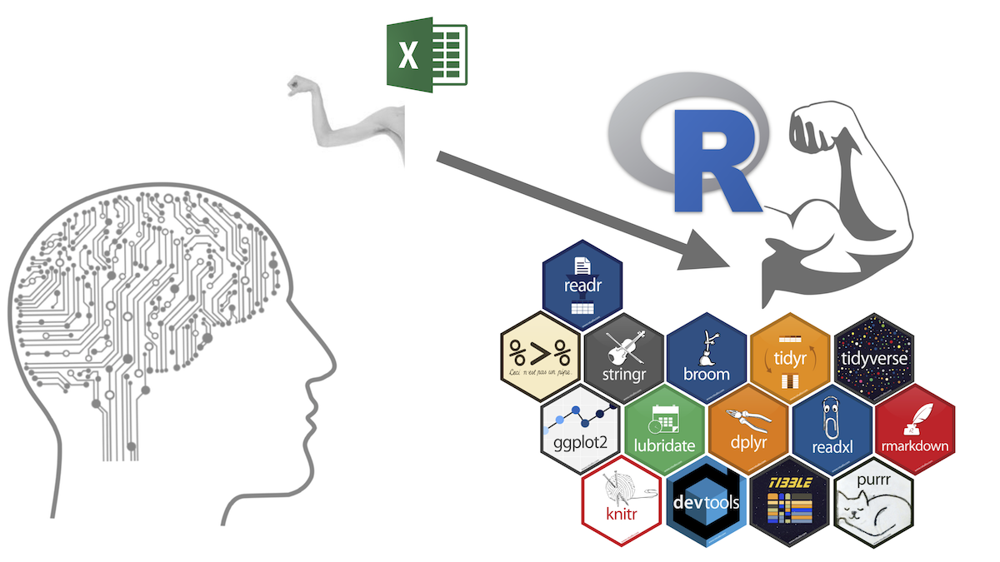
1 Code
- Code tells the computer what to do
- Code is a combination of rules and instructions in a programming language that tell the computer how to do things
- humans have many different languages to communicate, and there are hundreds of programming languages for computers
- Programmers are architects and builders of the digital world
- Short sequences of tasks that the computers are to perform are called algorithms the amount of code can be quite different (1000 lines of code = simple smartphone game, over 2 billion lines of code for Google search)
2 Initial thoughts and requests
Learning R is not difficult since it is a language it can easily be learn like any other language. The only thing you need is to actively use that language to make a progression.
Like languages, programming languages are alive and from version to version certain functions can change as the development of technology and algorithms is always tried to take up and improve.
But R is not the only language worth learning. Currently, programming languages are also often mixed, which is made possible by different packages. So it is possible to call and execute C code and Python code in R. Thus the computing performance disadvantages of R can be solved for resource hungry functions.
So depending on your need it is worth to learn also other languages like Python, C++, JAVA, HTML, …
You may find online courses on several web-portals like:
Request: So please instead using Excel again again, try to use R instead even it will take 2 minutes longer at the beginning, it will pay off over time.
2.1 thoughts on Microsoft Excel
“Excel is design for creating spread cheats not extensive data analysis !”
Microsoft Excel is a nice program everybody uses for getting an overview of money spending, orders, shipment, electric meter status ….
Excel offers flexibility with ease of use and visualization (with several limitations).
I use it sometimes for very small tasks, tasks which are not complex and the calculations are easy to check.
“The spreadsheet software Microsoft Excel, when used with default settings, is known to convert gene names to dates and floating-point numbers. A programmatic scan of leading genomics journals reveals that approximately one-fifth of papers with supplementary Excel gene lists contain erroneous gene name conversions.”
Ziemann, M., Eren, Y., El-Osta, A. (2016). Gene name errors are widespread in the scientific literature Genome Biology 17(1), 1 3. https://dx.doi.org/10.1186/s13059-016-1044-7
first reported in:
Zeeberg, B., Riss, J., Kane, D., Bussey, K., Uchio, E., Linehan, W., Barrett, J., Weinstein, J. (2004). Mistaken Identifiers: Gene name errors can be introduced inadvertently when using Excel in bioinformatics BMC Bioinformatics 5(1), 80. https://dx.doi.org/10.1186/1471-2105-5-80
Example:
Brent L. Fogel, Eric Wexler, Amanda Wahnich, Tara Friedrich, Chandran Vijayendran, Fuying Gao, Neelroop Parikshak, Genevieve Konopka, Daniel H. Geschwind, RBFOX1 regulates both splicing and transcriptional networks in human neuronal development, Human Molecular Genetics, Volume 21, Issue 19, 1 October 2012, Pages 4171–4186, https://doi.org/10.1093/hmg/dds240
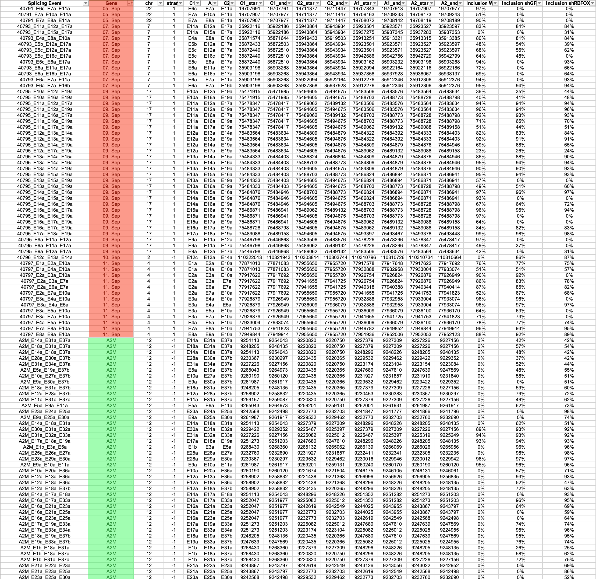
Brent et al., 2012, supplementary table 1
also in supplementaryx table 3,5,6,8,10 !!!
3 data science
You will learn data science with R.
So what is data science: data science is the extraction of knowledge from data
five important step in data science:
- import data
- tidy (this might take long time, depending on quality of initial data)
- modeling, statistics, visualize intermediate steps for controling …
- visualize results (visualization is the key for communication, Plots should be self-explaining at best)
- communicate (if you can´t communicte your data all the efforts above are useless)
4 Introduction
4.1 Why R?
- It’s free!
- easy to install / maintain
- R runs on all the platforms. Just name it and you got it!! Windows PC, Mac, Linux to name a few
- thousands of free libraries to use in areas of finance, natural language processing, cluster analysis, optimization, prediction, high performance computing etc.
- R is the most comprehensive statistical analysis package as new technology and ideas often appear first in R.
- easy to process big files and analyse huge amounts of data
- integrated data visualization tools, even dynamic
- integrates with many programming languages like Java, Ruby, C++, Python
- fast, and even faster with C++ integration via Rcpp.
- generation of interactive applications (shiny apps)
- easy to get help
- huge R community in the web
- stackoverflow with a lot of tags like tidyverse, dplyr, ggplot2 etc.
- rbloggers
- writing books, blogs, html sites in R with ease
4.2 What is R?
R is a language and environment for statistical computing and graphics. It is a GNU project which is similar to the S language and environment which was developed at Bell Laboratories (formerly AT&T, now Lucent Technologies) by John Chambers and colleagues. R can be considered as a different implementation of S. There are some important differences, but much code written for S runs unaltered under R.
- an effective data handling and storage facility,
- a suite of operators for calculations on arrays, in particular matrices,
- a large, coherent, integrated collection of intermediate tools for data analysis,
- graphical facilities for data analysis and display either on-screen or on hardcopy, and
- a well-developed, simple and effective programming language which includes conditionals, loops, user-defined
recursive functions and input and output facilities.
4.3 R cheat sheets
A collection of useful sheets for programming in R.
Cheatsheets online at RStudio site
4.3.1 offline version of relevant cheat sheets (August 2018)
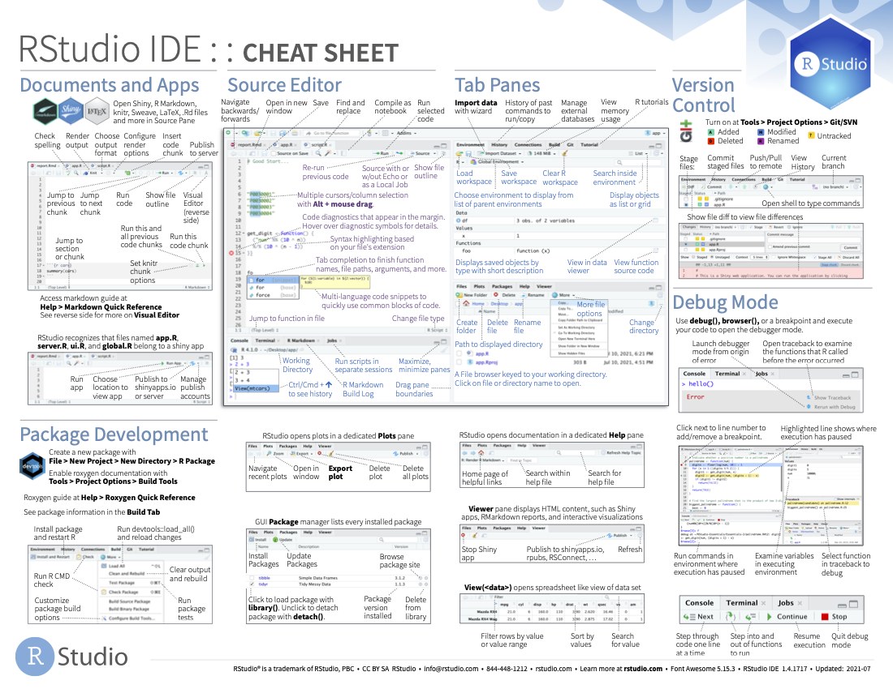
The RStudio IDE (download RStudio IDE cheat sheet)is the most popular integrated development environment for R. Do you want to write, run, and debug your own R code? Work collaboratively on R projects with version control? Build packages or create documents and apps? No matter what you do with R, the RStudio IDE can help you do it faster. This cheat sheet will guide you through the most useful features of the IDE, as well as the long list of keyboard shortcuts built into the RStudio IDE.
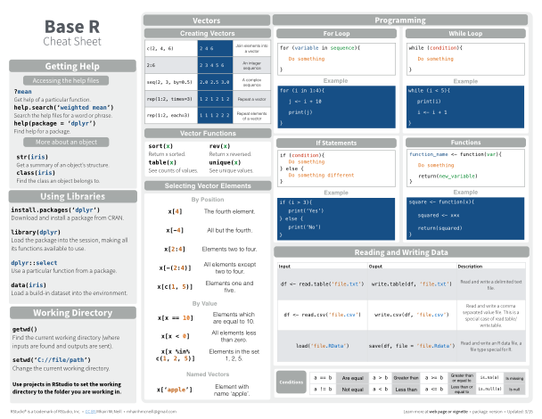
base R (download base R cheat sheet) overview of Vectors, Matrices, Lists, Data Frames, Functions and more in base R.
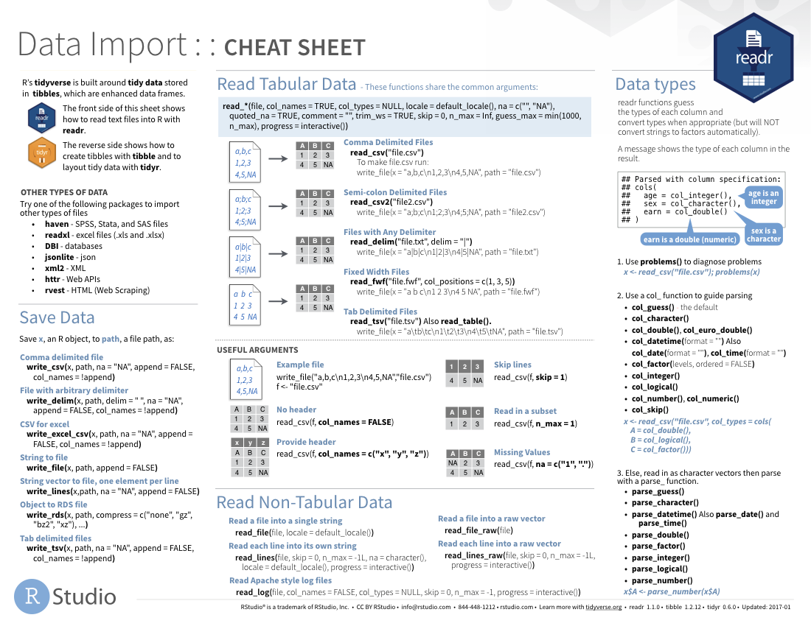
The Data Import & Transformation cheat sheet (download Data Import cheat sheet) reminds you how to read in flat files with http://readr.tidyverse.org/, work with the results as tibbles, and reshape messy data with tidyr. Use tidyr to reshape your tables into tidy data, the data format that works the most seamlessly with R and the tidyverse.
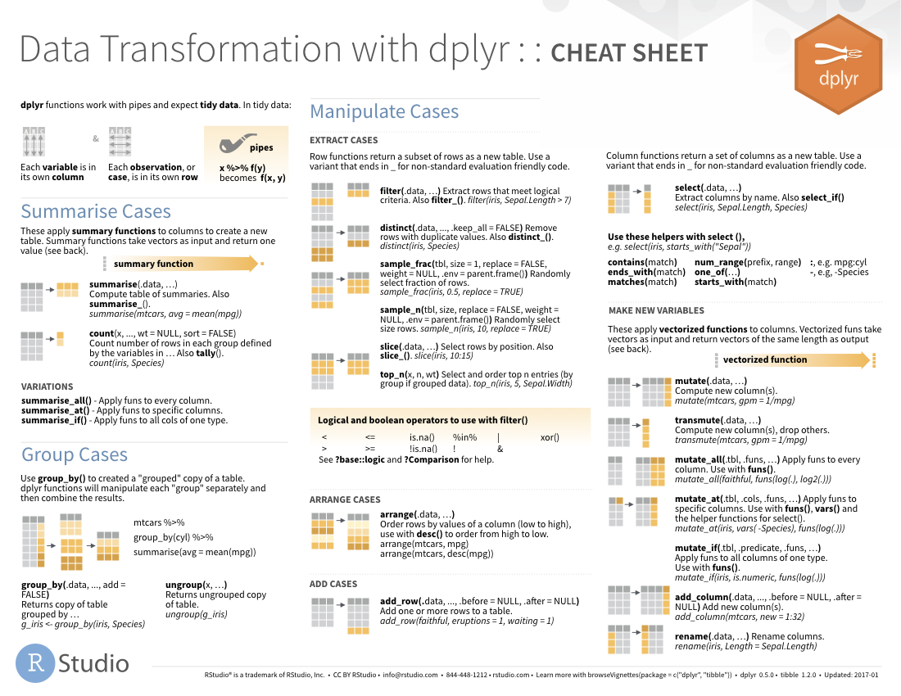
dplyr (download Data transformation cheat sheet) provides a grammar for manipulating tables in R. This cheat sheet will guide you through the grammar, reminding you how to select, filter, arrange, mutate, summarise, group, and join data frames and tibbles.
Also very informative is the older data wrangling cheat sheet (download data wrangling cheat sheet)
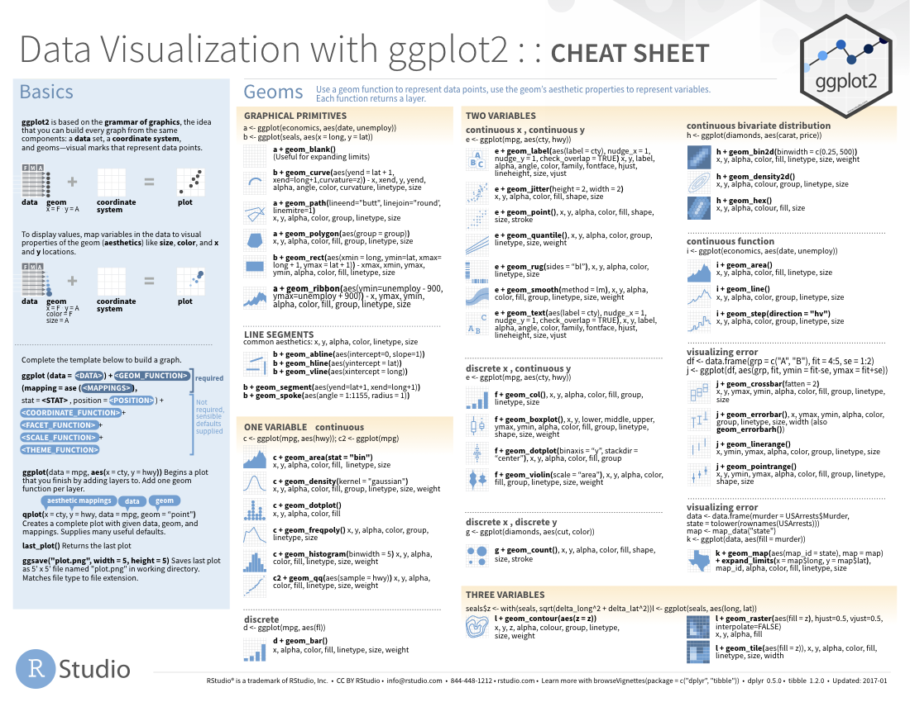
The ggplot2 package (download Data visualization cheat sheet) lets you make beautiful and customizable plots of your data. It implements the grammar of graphics, an easy to use system for building plots. See docs.ggplot2.org for detailed examples.
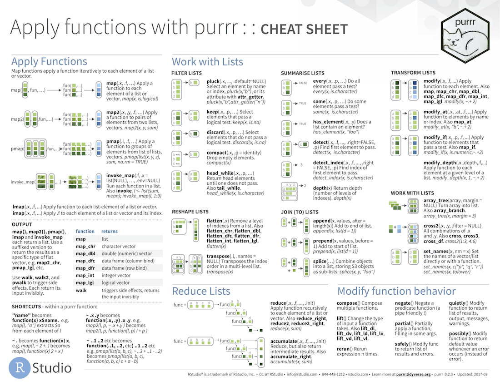
The purrr package (download purrr cheat sheet) makes it easy to work with lists and functions. This cheatsheet will remind you how to manipulate lists with purrr as well as how to apply functions iteratively to each element of a list or vector. The back of the cheatsheet explains how to work with list-columns. With list columns, you can use a simple data frame to organize any collection of objects in R.
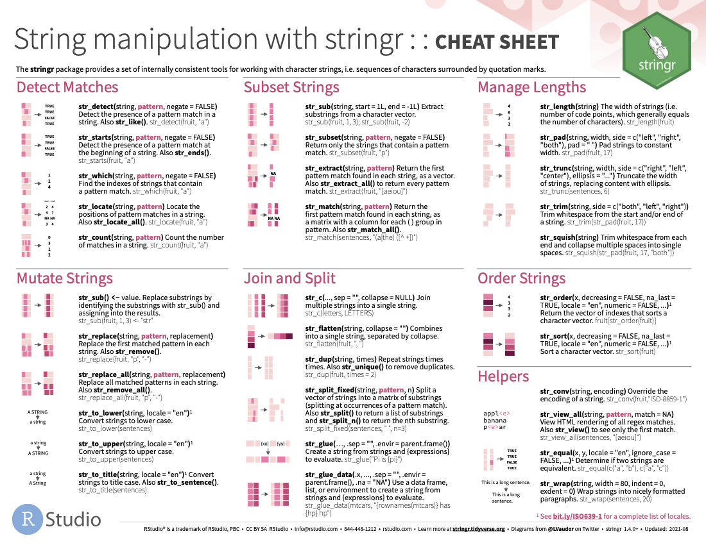
The stringr package (download stringr cheat sheet) provides an easy to use toolkit for working with strings, i.e. character data, in R. This cheatsheet guides you through stringr’s functions for manipulating strings. The back page provides a concise reference to regular expresssions, a mini-language for describing, finding, and matching patterns in strings.
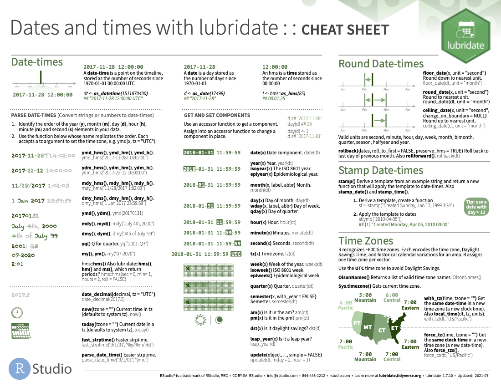
Lubridate (download Lubridate cheat sheet) makes it easier to work with dates and times in R. This lubridate cheatsheet covers how to round dates, work with time zones, extract elements of a date or time, parse dates into R and more. The back of the cheatsheet describes lubridate’s three timespan classes: periods, durations, and intervals; and explains how to do math with date-times.
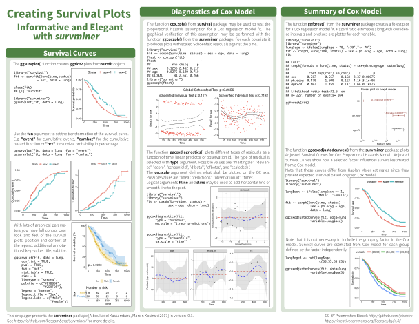
survminer (download Lubridate cheat sheet) - elegant survival plots
4.4 R - Help
Getting help is easy.
| help | what it does | output |
|---|---|---|
?mean |
get the help for mean() function (you can also mark the function and press F1 |
Generic function for the (trimmed) arithmetic mean. Usage: mean(x, …) |
help.search("mean") |
search all help files accross all installed packages for a word or phrase | output is list of several packages containing the word or phrase … |
help(package="dplyr") |
redirection to the help page of the package | will show the help of all functions in the package |
At some point you will stuck. Please use google and try to explain your problem in the simplest way and tag it with R.
5 R - Packages
R packages are a collection of R functions, complied code and sample data. They are stored under a directory called “library” in the R environment. By default, R installs a set of packages during installation other packages must be installed after R installation.
5.1 Where do I get R - Packages
5.1.1 CRAN
In RStudio you can use the Packages register card and hit the Install button.
reliable: package is checked during submission process
MRAN for Windows users
5.1.3 Github
5.1.4 MetaCRAN
5.2 R - Using Packages
| syntax | what it does |
|---|---|
install.packages("dplyr") |
download and install package dplyr from CRAN |
library("dplyr") |
load the package into the session, making all its functions available to use |
dplyr::select |
use a particular function form the package |
data(iris) |
loads a build in dataset into the environment |
citation("dplyr") |
print the reference for citation |
6 R - Working directory
| syntax | what it does |
|---|---|
getwd() |
print out the current working directory (where inputs are found and outputs are sent) |
setwd("path") |
change the current working directory to path |
USE projects in RStudio to set the working directory to the folder you are working in.
7 RStudio IDE (https://rstudio.com)
RStudio is an integrated development environment (IDE). It is critical tool for writing and exucuting R-code.
RStudio was build for R but it supports also:
- RMarkdown (HTML, PDF, Word Documents, and slide shows)
- C++
- Python
- SQL
- Stan
- HTML
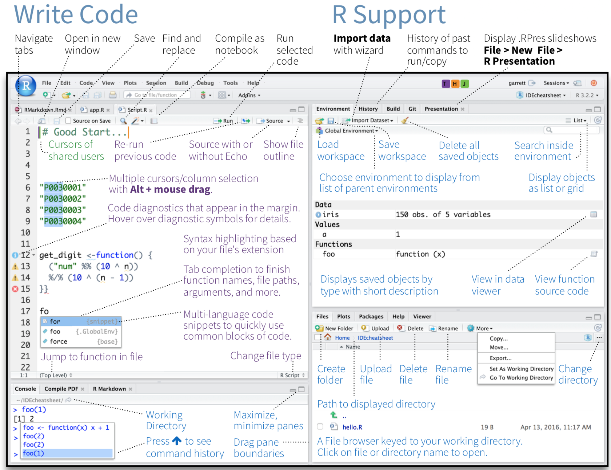
screenshot from RStudio cheat sheet
- Console to run R, with syntax highlighter
- Editor to work with scripts
- Viewer for data / plots / website
- Package management (including building)
- Autocompletion using TAB
- Cheatsheets
- Git integration for versioning
- Inline outputs (>= v1.03)
- Keyboard shortcuts
- Notebooks
Don’t mix up R and RStudio.
R needs to be installed first.
And for windows PC install RTools as well since it contains several additional system tools like compiler and zip executables.
7.1 Useful Rstudio shortcuts
replace Cmd by Ctrl for PC
| shortcut | function |
|---|---|
| Cmd + Enter | run code |
| tab | auto-complete code |
| Ctrl + Alt + ↑ or ↓ | multi-line edition |
| Cmd + Alt + ↑ or ↓ | copy line up / down |
| Alt + ↑ or ↓ | move line up / down |
| Alt+- | <- (assign e.g. a value to a variable) |
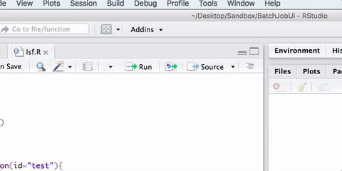
quick view of keyboard shortcuts:
Alt + ↑ + K
8 Projects
always use projects !!!
8.1 Using Projects
RStudio projects make it straightforward to divide your work into multiple contexts, each with their own working directory, workspace, history, and source documents.
With projects file path are relative from your project and are not relying on your system.
example:
you generated a R-Script loading files >> doing some calculations >> writing some output.
your R-project folder: R_analysis
your working directory absolute: c:/user/admin/documents/2020_projects/03_subproject/measurements/R_analysis
your working directory relative (project directory): R_analysis
When you open a project the working directory is always the proejct directory.
If you did your scripting in a project you can give someone else the project folder and he or she doesn’t have to worry about the paths that are used because they are relative.
8.2 Creating projects
RStudio projects are associated with R working directories. You can create an RStudio project:
- In a brand new directory
- In an existing directory where you already have R code and data
- By cloning a version control (Git or Subversion) repository
To create a new project use the Create Project command (available on the Projects menu and on the global toolbar):
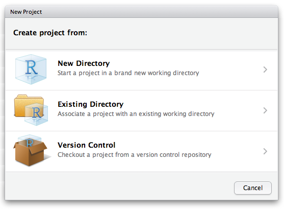
When a new project is created RStudio:
- Creates a project file (with an .Rproj extension) within the project directory. This file contains various project options (discussed below) and can also be used as a shortcut for opening the project directly from the filesystem.
- Creates a hidden directory (named .Rproj.user) where project-specific temporary files (e.g. auto-saved source documents, window-state, etc.) are stored. This directory is also automatically added to .Rbuildignore, .gitignore, etc. if required.
- Loads the project into RStudio and display its name in the Projects toolbar (which is located on the far right side of the main toolbar)
8.3 Working with projects
8.3.1 Opening Projects
There are several ways to open a project:
- Using the Open Project command (available from both the Projects menu and the Projects toolbar) to browse for and select an existing project file (e.g. MyProject.Rproj).
- Selecting a project from the list of most recently opened projects (also available from both the Projects menu and toolbar).
- Double-clicking on the project file within the system shell (e.g. Windows Explorer, OSX Finder, etc.).
8.3.1.1 When a project is opened within RStudio the following actions are taken:
- A new R session (process) is started
- The .Rprofile file in the project’s main directory (if any) is sourced by R
- The .RData file in the project’s main directory is loaded (if project options indicate that it should be loaded).
- The .Rhistory file in the project’s main directory is loaded into the RStudio History pane (and used for Console Up/Down arrow command history).
- The current working directory is set to the project directory.
- Previously edited source documents are restored into editor tabs
- Other RStudio settings (e.g. active tabs, splitter positions, etc.) are restored to where they were the last time the project was closed.
8.3.2 Quitting a Project
When you are within a project and choose to either Quit, close the project, or open another project the following actions are taken:
- .RData and/or .Rhistory are written to the project directory (if current options indicate they should be)
- The list of open source documents is saved (so it can be restored next time the project is opened)
- Other RStudio settings (as described above) are saved.
- The R session is terminated.
9 R-script header
Use a intuitive Script header. This is important especially if the script needs be shared with colleagues.
Default script header (suggestion):
################################################
## Project:
## Script purpose:
## Date:
## Author:
## Version:
## Version Release notes:
##################################################Example:
################################################
## Project: Rho DIA-MS proteome data analysis
## Script purpose: analysis of Rho-mutant and HG001 proteome data and reveal differential proteome levels
## Date: 12.09.2018
## Author: Stephan Michalik
## Version: 1.00
## Version Release notes:
##################################################10 R basics
The base R cheat sheet ( base R cheat sheet ) covers a broad range of the points of the chapter and is worth looking at.
10.1 writing code
The # sign is used to out-comment code. (code will NOT run)
use Cmd + Shift+ R for comment a new code section
This will appear in the drop down level menu in the scripting window for navigation.
DO NOT use " " (spaces) in variables etc., use always "_" or “.” instead of spaces !!!
The best is to use "_" since “.” is used in other programming languages. In python the “.” means look inside the space that is before the dot for code to execute.
So if intermixing codes becomes more feasable this might be very disturbing.
10.3 Arithmetic with R
In its most basic form, R can be used as a simple calculator. Consider the following arithmetic operators:
+: addition
-: subtraction
*: multiplication
/: division
^or**: exponentiation
R will:
- first perform exponentiation
- then multiplications and/or divisions
- and finally additions and/or subtractions.
If you need to change the priority during the evaluation, use parentheses – i.e. ( and ) – to group calculations.
## [1] 10## [1] 0## [1] 15## [1] 5## [1] 32## [1] 1 2 3 4 5 6 7 8 9 10## [1] 2.0 2.5 3.0## [1] 1 2 1 2 1 2## [1] 1 1 1 2 2 2other function:
mean()= averagemedian()= mediansum()= sumIQR()= interquartile rangevar()= variancecov()= covariancecor()= correlationquantile()= produces sample quantiles corresponding to the given probabilities- … (please see e.g. R stats packages for available basic function)
10.4 Variable assignment
A basic concept in (statistical) programming is called a variable.
A variable allows you to store a value (e.g. 4) or an object (e.g. a function description) in R. You can then later use this variable’s name to easily access the value or the object that is stored within this variable.
You can assign a value 4 to a variable my_var with the command
# An addition
my_var <- 4 # my_var = 4 can alos be used but "<-" is the more universal correct assignment operator
# Print out the value of the variable my_var
my_var## [1] 4# Assign a value to the variables my_apples and my_oranges
my_apples <- 5
my_oranges <- 1
# Add these two variables together
my_apples + my_oranges## [1] 6## [1] 610.5 Basic data types in R
R works with numerous data types. Some of the most basic types to get started are:
Decimal values like 4.5 are called numerics.
Natural numbers like 4 are called integers. Integers are also numerics.
Boolean values (TRUE or FALSE) are called logical.
Text (or string) values are called characters.
Note how the quotation marks on the right indicate that “some text” is a character.
# Declare variables of different types
my_numeric <- 42
my_character <- "universe"
my_logical <- FALSE 10.5.1 Special cases
10.5.2 missing and infinite
## [1] NA 2.45 45.67## [1] Inf 2.45 45.6710.5.3 What’s that data type?
when you added 5 + "six", you got an error due to a mismatch in data types? You can avoid such embarrassing situations by checking the data type of a variable beforehand. You can do this with the class() function, as the code on the right shows.
# Declare variables of different types
my_numeric <- 42
my_character <- "universe"
my_logical <- FALSE
# Check class of my_numeric
class(my_numeric)## [1] "numeric"## [1] "character"## [1] "logical"10.6 creating a vector
In R, you create a vector with the combine function c(). You place the vector elements separated by a comma between the parentheses. For example:
numeric_vector <- c(1, 2, 3)
character_vector <- c("a", "b", "c")
boolean_vector <- c(TRUE,FALSE,TRUE)10.6.1 Naming a vector
As a data analyst, it is important to have a clear view on the data that you are using. Understanding what each element refers to is therefore essential.
In the previous exercise, we created a vector with your winnings over the week. Each vector element refers to a day of the week but it is hard to tell which element belongs to which day. It would be nice if you could show that in the vector itself.
You can give a name to the elements of a vector with the names() function. Have a look at this example:
## [1] "John Doe" "poker player"## Name Profession
## "John Doe" "poker player"#same result can be directly achieved by naming inside c()
some_vector1 <- c(Name = "John Doe", Profession= "poker player")
some_vector1## Name Profession
## "John Doe" "poker player"10.6.2 vector functions
## [1] 1 1 2 2 3 4 4 4 5 5 6 6 7 8 9 10## x
## 1 2 3 4 5 6 7 8 9 10
## 2 2 1 3 2 2 1 1 1 1## [1] 6 4 2 1 5 4 4 1 8 7 9 10 6 5 2 3## [1] 3 2 5 6 10 9 7 8 1 410.7 Matrix
10.7.1 What is a matrix?
In R, a matrix is a collection of elements of the same data type (numeric, character, or logical) arranged into a fixed number of rows and columns. Since you are only working with rows and columns, a matrix is called two-dimensional.
You can construct a matrix in R with the matrix() function. Consider the following example:
## [,1] [,2] [,3]
## [1,] 1 2 3
## [2,] 4 5 6
## [3,] 7 8 9In the matrix() function:
The first argument is the collection of elements that R will arrange into the rows and columns of the matrix. Here, we use 1:9 which is a shortcut for c(1, 2, 3, 4, 5, 6, 7, 8, 9). The argument byrow indicates that the matrix is filled by the rows. If we want the matrix to be filled by the columns, we just place byrow = FALSE. The third argument nrow indicates that the matrix should have three rows.
10.7.2 Naming a matrix
To help you remember what is stored in a matrix, you would like to add the names for the rows. Not only does this help you to read the data, but it is also useful to select certain elements from the matrix.
Similar to vectors, you can add names for the rows and the columns of a matrix
10.8 Data frame
A data frame is used for storing data tables. It is a list of vectors of equal length. For example, the following variable df is a data frame containing three vectors n, s, b.
what´s the difference between a matrix and a data.frame?
Both matrix and data frame are 2 dimensional data structure. While matrix is homogeneous, data frame is not.
R won’t automatically treat dataframe rows as vectors, because a dataframe’s columns can be of different types. But if e.g. all columns are numeric (no characters, factors, etc), you can convert it to a numeric matrix yourself, using the as.matrix() function, and then treat its rows as vectors.
10.8.1 Extract specific information from a data.frame
We will use the build in data.frame mtcars for the example.
select some rows or columns:
## [1] 21.0 21.0 22.8 21.4 18.7 18.1 14.3 24.4 22.8 19.2 17.8 16.4 17.3 15.2 10.4
## [16] 10.4 14.7 32.4 30.4 33.9 21.5 15.5 15.2 13.3 19.2 27.3 26.0 30.4 15.8 19.7
## [31] 15.0 21.4## [1] 21.0 21.0 22.8 21.4 18.7 18.1 14.3 24.4 22.8 19.2 17.8 16.4 17.3 15.2 10.4
## [16] 10.4 14.7 32.4 30.4 33.9 21.5 15.5 15.2 13.3 19.2 27.3 26.0 30.4 15.8 19.7
## [31] 15.0 21.410.9 Perform comparisons
Perform comparisons and use them for subsetting:
==equal!=different<smaller<=smaller or equal>greater>=greater or equal!is not&,&&and|,||or
comment:
&& and || are what is called “short circuiting”. That means that they will not evaluate the second operand if the first operand is enough to determine the value of the expression.
For example if the first operand to && is false then there is no point in evaluating the second operand, since it can’t change the value of the expression (false && true and false && false are both false). The same goes for || when the first operand is true.
## [1] 1 2 3 4 5 6## [1] FALSE FALSE TRUE TRUE FALSE FALSE## [1] 3 4## [1] FALSE## [1] FALSE10.10 subsetting
#subset / filter the table with base R
# choose from mtcars data.frame the cars with 4 gears
mtcars[which(mtcars$gear==4),]# choose from mtcars data.frame the cars with 4 gears and min 100 hp
mtcars[which(mtcars$gear==4 & mtcars$hp>=100),]same can be achieved with subset() function
#subset / filter the table with base R
# choose from mtcars data.frame the cars with 4 gears
subset(x = mtcars,mtcars$gear==4)# choose from mtcars data.frame the cars with 4 gears and min 100 hp
subset(x = mtcars,mtcars$gear==4 & mtcars$hp>=100)10.11 Recap: Vectors, Matrices, Data frames
- Vectors (one dimensional array): can hold numeric, character or logical values. The elements in a vector all have the same data type.
- Matrices (two dimensional array): can hold numeric, character or logical values. The elements in a matrix all have the same data type.
- Data frames (two-dimensional objects): can hold numeric, character or logical values. Within a column all elements have the same data type, but different columns can be of different data type.
10.12 Lists
A list in R is similar to your to-do list at work or school: the different items on that list most likely differ in length, characteristic, and type of activity that has to do be done.
A list in R allows you to gather a variety of objects under one name (that is, the name of the list) in an ordered way. These objects can be matrices, vectors, data frames, even other lists, etc. It is not even required that these objects are related to each other in any way.
You could say that a list is some kind super data type: you can store practically any piece of information in it!
create a list:
Let us create our first list! To construct a list you use the function list():
my_list <- list(comp1, comp2 ...)
# Vector with numerics from 1 up to 10
my_vector <- 1:10
# Matrix with numerics from 1 up to 9
my_matrix <- matrix(1:9, ncol = 3)
# First 10 elements of the built-in data frame mtcars
my_df <- mtcars[1:10,]
# Construct list with these different elements:
my_list <- list(vector = my_vector,
matrix = my_matrix,
data.frame = my_df)
my_list## $vector
## [1] 1 2 3 4 5 6 7 8 9 10
##
## $matrix
## [,1] [,2] [,3]
## [1,] 1 4 7
## [2,] 2 5 8
## [3,] 3 6 9
##
## $data.frame
## mpg cyl disp hp drat wt qsec vs am gear carb
## Mazda RX4 21.0 6 160 110 3.90 2.62 16.5 0 1 4 4
## Mazda RX4 Wag 21.0 6 160 110 3.90 2.88 17.0 0 1 4 4
## Datsun 710 22.8 4 108 93 3.85 2.32 18.6 1 1 4 1
## Hornet 4 Drive 21.4 6 258 110 3.08 3.21 19.4 1 0 3 1
## Hornet Sportabout 18.7 8 360 175 3.15 3.44 17.0 0 0 3 2
## Valiant 18.1 6 225 105 2.76 3.46 20.2 1 0 3 1
## Duster 360 14.3 8 360 245 3.21 3.57 15.8 0 0 3 4
## Merc 240D 24.4 4 147 62 3.69 3.19 20.0 1 0 4 2
## Merc 230 22.8 4 141 95 3.92 3.15 22.9 1 0 4 2
## Merc 280 19.2 6 168 123 3.92 3.44 18.3 1 0 4 4#get data out of the list
# Vector with numerics from 1 up to 10
my_vector <- 1:10
# Matrix with numerics from 1 up to 9
my_matrix <- matrix(1:9, ncol = 3)
# First 10 elements of the built-in data frame mtcars
my_df <- mtcars[1:10,]
# Construct list with these different elements and naming of the list:
my_list <- list(vector = my_vector,
matrix = my_matrix,
data.frame = my_df)
# naming can be done also after creating a list using "names(my_list) <- c("name1", "name2")"
#get the data.frame
my_list$data.frame## [1] 21.0 21.0 22.8 21.4 18.7 18.1 14.3 24.4 22.8 19.2## [1] 21.0 21.0 22.8 21.4 18.7 18.1 14.3 24.4 22.8 19.2## [1] 21.0 21.0 22.8 21.4 18.7 18.1 14.3 24.4 22.8 19.2add more data to a list:
To conveniently add elements to lists you can use the c() function, that you also used to build vectors:
ext_list <- c(my_list , my_val) This will simply extend the original list, my_list, with the component my_val. This component gets appended to the end of the list. If you want to give the new list item a name, you just add the name as you did before:
ext_list <- c(my_list, my_name = my_val)
10.13 Factor
10.13.1 What’s a factor and why would you use it?
In this chapter you dive into the wonderful world of factors.
The term factor refers to a statistical data type used to store categorical variables. The difference between a categorical variable and a continuous variable is that a categorical variable can belong to a limited number of categories. A continuous variable, on the other hand, can correspond to an infinite number of values.
It is important that R knows whether it is dealing with a continuous or a categorical variable, as the statistical models you will develop in the future treat both types differently. (You will see later why this is the case.)
A good example of a categorical variable is sex. In many circumstances you can limit the sex categories to “Male” or “Female”. (Sometimes you may need different categories. For example, you may need to consider chromosomal variation, hermaphroditic animals, or different cultural norms, but you will always have a finite number of categories.)
To create factors in R, you make use of the function factor(). First thing that you have to do is create a vector that contains all the observations that belong to a limited number of categories. For example, sex_vector contains the sex of 5 different individuals:
It is clear that there are two categories, or in R-terms ‘factor levels’, at work here: “Male” and “Female”.
The function factor() will encode the vector as a factor:
## [1] "Male" "Female" "Female" "Male" "Male"## [1] Male Female Female Male Male
## Levels: Female MaleThere are two types of categorical variables: a nominal categorical variable and an ordinal categorical variable.
A nominal variable is a categorical variable without an implied order. This means that it is impossible to say that ‘one is worth more than the other’.
For example, think of the categorical variable animals_vector with the categories “Elephant”, “Giraffe”, “Donkey” and “Horse”. Here, it is impossible to say that one stands above or below the other. (Note that some of you might disagree ;-) ).
In contrast, ordinal variables do have a natural ordering. Consider for example the categorical variable temperature_vector with the categories: “Low”, “Medium” and “High”. Here it is obvious that “Medium” stands above “Low”, and “High” stands above “Medium”.
10.13.2 Factor levels
When you first get a data set, you will often notice that it contains factors with specific factor levels. However, sometimes you will want to change the names of these levels for clarity or other reasons. R allows you to do this with the function levels():
A good illustration is the raw data that is provided to you by a survey. A common question for every questionnaire is the sex of the respondent. Here, for simplicity, just two categories were recorded, “M” and “F”. (You usually need more categories for survey data; either way, you use a factor to store the categorical data.)
Recording the sex with the abbreviations “M” and “F” can be convenient if you are collecting data with pen and paper, but it can introduce confusion when analyzing the data. At that point, you will often want to change the factor levels to “Male” and “Female” instead of “M” and “F” for clarity.
Watch out: the order with which you assign the levels is important !!!
If you type levels(factor_survey_vector), you’ll see that it outputs [1] “F” “M”. If you don’t specify the levels of the factor when creating the vector, R will automatically assign them alphabetically. To correctly map “F” to “Female” and “M” to “Male”, the levels should be set to c("Female", "Male"), in this order.
10.13.3 Summarizing a factor
After finishing this course, one of your favorite functions in R will be summary(). This will give you a quick overview of the contents of a variable:
## Min. 1st Qu. Median Mean 3rd Qu. Max.
## 4 4 4 4 4 4Going back to our survey, you would like to know how many “Male” responses you have in your study, and how many “Female” responses. The summary() function gives you the answer to this question.
11 What means “tidy / tidy data”?
Tidy data is a way to organize tabular data. It provides a consistent data structure accross packages
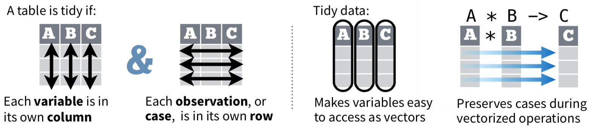
11.1 Example of data vs tidy data
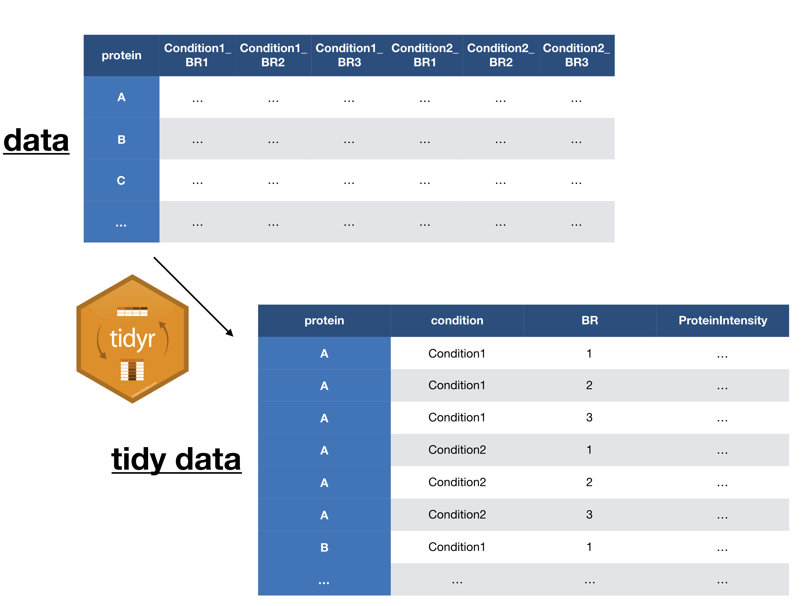
12 “Messy data” to tidy data !!!
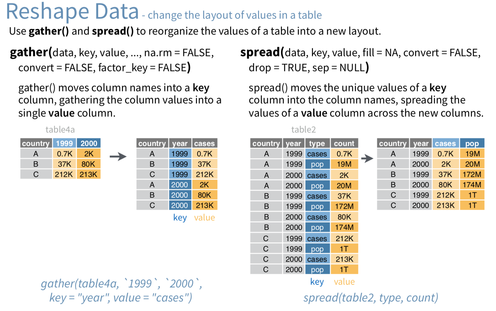
13 The Tidyverse
This “meta-package” consists of several R packages, or as the Founding Father Hadley Wickahm says, “The tidyverse is an opinionated collection of R packages designed for data science.”
| package | description | |
|---|---|---|
 |
ggplot2 (plotting) | ggplot2 is a system for declaratively creating graphics, based on The Grammar of Graphics. You provide the data, tell ggplot2 how to map variables to aesthetics, what graphical primitives to use, and it takes care of the details. |
 |
dplyr (for transforming and summarizing dataframe content) | dplyr provides a grammar of data manipulation, providing a consistent set of verbs that solve the most common data manipulation challenges. |
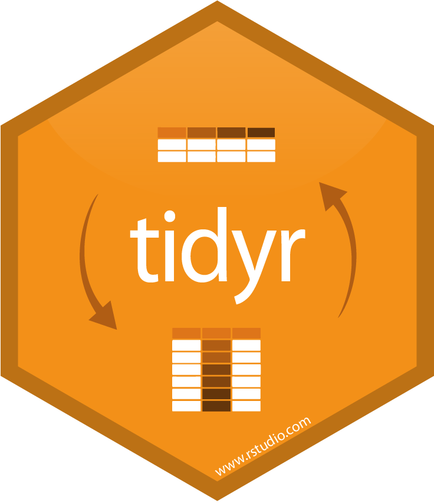 |
tidyr (for transforming (“tidying”) data frame structure) | tidyrprovides a set of functions that help you get to tidy data. Tidy data is data with a consistent form: in brief, every variable goes in a column, and every column is a variable. |
| readr (reading/saving data) | readr provides a fast and friendly way to read rectangular data (like csv, tsv, and fwf). It is designed to flexibly parse many types of data found in the wild, while still cleanly failing when data unexpectedly changes. | |
| purrr (functional programming) | purrr enhances R’s functional programming (FP) toolkit by providing a complete and consistent set of tools for working with functions and vectors. Once you master the basic concepts, purrr allows you to replace many for loops with code that is easier to write and more expressive. ( an upgrade of base R functional programming tools. (Beyond scope of class.)) | |
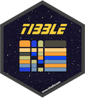 |
tibble (an improved data frame) | tibble is a modern re-imagining of the data frame, keeping what time has proven to be effective, and throwing out what it has not. Tibbles are data.frames that are lazy and surly: they do less and complain more forcing you to confront problems earlier, typically leading to cleaner, more expressive code. |
| stringr (dealing and manipulation of strings) | stringr provides a cohesive set of functions designed to make working with strings as easy as possible. It is built on top of stringi, which uses the ICU C library to provide fast, correct implementations of common string manipulations. | |
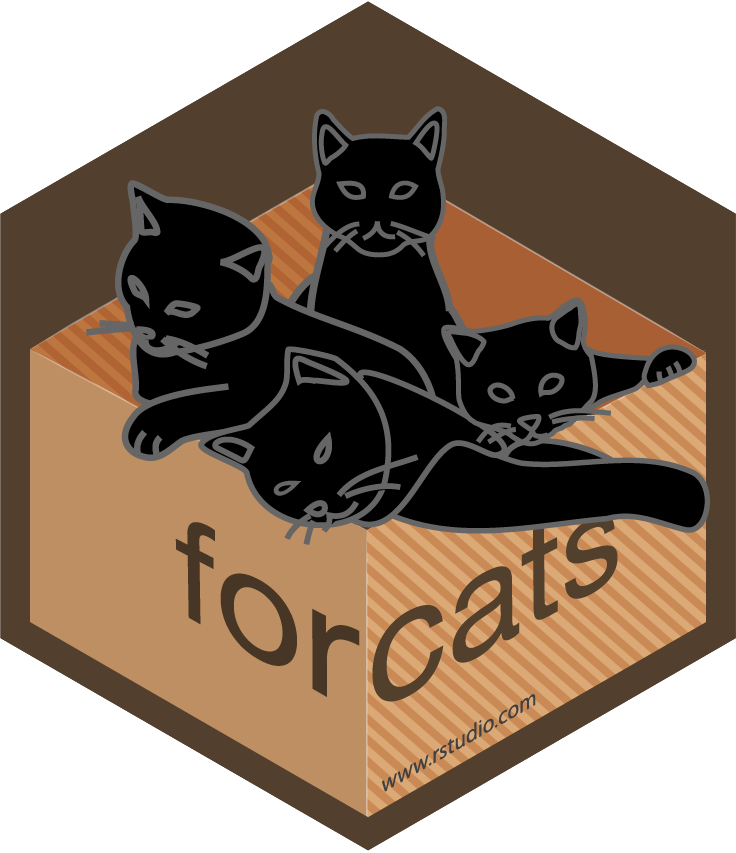 |
forcats (dealing with factors) | provides a suite of useful tools that solve common problems with factors. R uses factors to handle categorical variables, variables that have a fixed and known set of possible values. |
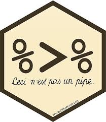 |
magrittr (pipeline mode of functions) | offers a set of operators which make your code more readable by: structuring sequences of data operations left-to-right (as opposed to from the inside and out),avoiding nested function calls, minimizing the need for local variables and function definitions, and making it easy to add steps anywhere in the sequence of operations.The operators pipe their left-hand side values forward into expressions that appear on the right-hand side, i.e. one can replace f(x) with x %>% f(), where %>% is the (main) pipe-operator. When coupling several function calls with the pipe-operator, the benefit will become more apparent. |
Important: Commands/functions of each package can be strung together in order using the pipe %>% (Ctrl + ↑ + M) operator. (example follows…)
read more abaout the tidyverse on the webpage
You will learn functionalities of each package during the course via useful example scripts.
13.1 where do the package names come from ?
Well the name (choosen by the programmer) of a package often conveys a story and is focused mainly on the usage of the package.
examples:
- dplyr - So the
dstands for data frames (othersdbfor databases,dtfor data tables…) ;plyrR apply-functions – „split-apply-combine“ strategy - ggplot2 - Grammer of Graphics plotting (https://vita.had.co.nz/papers/layered-grammar.html)
- purrr - Hadley Wickham - “your pure R functions purrr”
- vroom - reads data so fast, you almost can hear it making vroom vroom like a sports car
13.2 First things first, “What is a tibble?”
A tibble is a modern reimagining of the data.frame, keeping what time has proven to be effective, and throwing out what is not. Tibbles are data.frames that are lazy and surly: they do less (i.e. they don’t change variable names or types, and don’t do partial matching) and complain more (e.g. when a variable does not exist). This forces you to confront problems earlier, typically leading to cleaner, more expressive code. Tibbles also have an enhanced print() method which makes them easier to use with large datasets containing complex objects.
- tibble is a modern re-imagining of the data frame –> tibble is a list in data.frame style
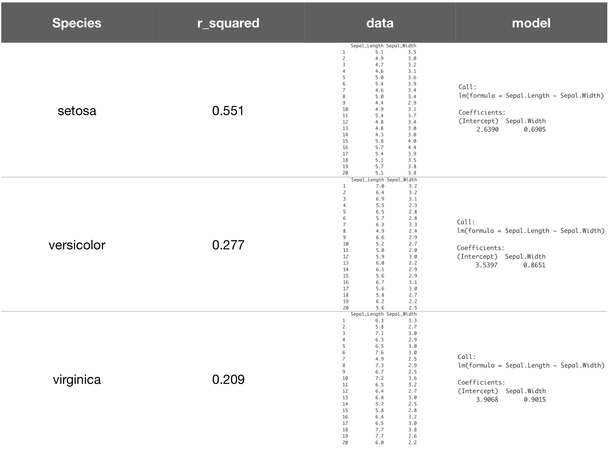
tibble example:
Tibbles enhance data frames in three ways:
- Subsetting - [ always returns a new tibble, [[ and $ always return a new vector
- No partial matching - You must use full column names when subsetting
- Display - When you print a tibble, R provides a concise view of the data that fits on one screen
many tidyverse functions you may find explained and coupled with a pratical examples in the Examples section
13.3 ggplot2 - elegant graphics for data analysis (part of tidyverse)
ggplot2 package: It’s one of the most commonly downloaded R packages (over a million downloads in the last year!) and has influenced the design of graphics packages for other languages.
ggplot2 is an R package for producing statistical, or data, graphics, but it is unlike most other graphics packages because it has a deep underlying gram- mar. This grammar, based on the Grammar of Graphics (Grammar of Graphics (Wilkinson, Leland; 2015)).
You can find a fast and brief overview of ggplot2 at R graphics cookbook
In addition to the powerful basis of ggplot2 several (100+) extension were developed ggplot2-exts.org
In brief, the grammar tells us that a statistical graphic is a mapping from data to aesthetic attributes (colour, shape, size) of geometric objects (points, lines, bars).
- Data
- Aesthetics or Mapping: What should be plotted on x and y-axis. group-wise: colour, fill, size, shape,line width, line type.
- Geometrics: Should a point, line, histogram, bar or boxplot (…) be used. (
geom_...()) - Facets: data groups plot by columns and rows 4a. Scales: scale translate back and forth between variable ranges and property ranges (numbers >> position; log-scaled or discrete)
- Statistics: data binning, smoothing (e.g. loess fit), …
- Coordinates: fixed, polar, set limits, do coord. cartesian
- Themes: use Plot themes
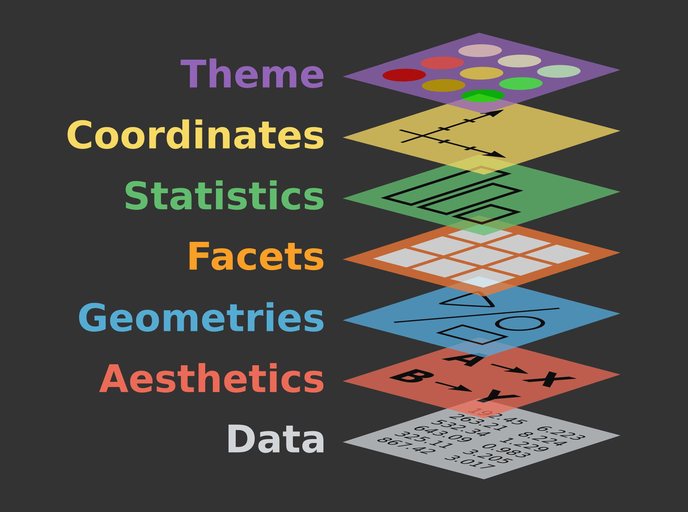
grammar of graphics
13.3.1 ggplot2 - Themes
library(datasets)
library(ggplot2)
p <- ggplot(diamonds) +
geom_point(aes(x = carat, y = price, colour = color),alpha=0.5) +
facet_wrap(~cut) +
labs(title="overview of diamonds dataset",
subtitle="carat vs. price & colored by diamond color",
caption = "a caption text would be placed here" )Pay attention to the structure of this function call: data and aesthetic mappings are supplied in ggplot(), then layers are added on with +.
This is an important pattern, and as you learn more about ggplot2 you’ll construct increasingly sophisticated plots by adding on more types of components.
1. theme_gray()
 2. theme_bw()
2. theme_bw()
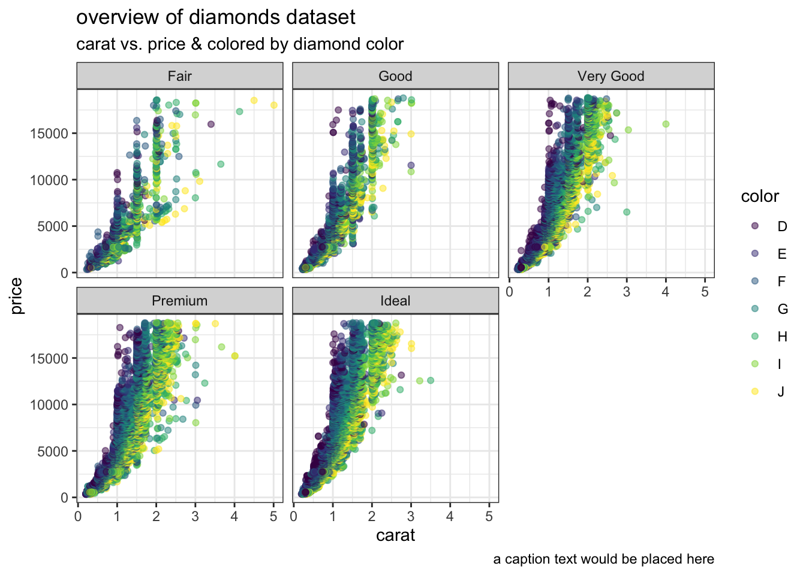
3. theme_linedraw() 4. theme_light()
4. theme_light()
 5. theme_dark()
5. theme_dark()
 6. theme_minimal()
6. theme_minimal()
 7. theme_classic()
7. theme_classic()
 8. theme_void()
8. theme_void()

13.3.1.1 hrbrthemes Themes
There are also packages that add themes to ggplot like the hrbrthemes package.
more information about the hrbrthemes package can be found here
But here are special fonts needed which are proivided in the package:
## You will likely need to install these fonts on your system as well.
##
## You can find them in [/Library/Frameworks/R.framework/Versions/3.6/Resources/library/hrbrthemes/fonts/plex-sans]## You will likely need to install these fonts on your system as well.
##
## You can find them in [/Library/Frameworks/R.framework/Versions/3.6/Resources/library/hrbrthemes/fonts/public-sans]## You will likely need to install these fonts on your system as well.
##
## You can find them in [/Library/Frameworks/R.framework/Versions/3.6/Resources/library/hrbrthemes/fonts/roboto-condensed]## You will likely need to install these fonts on your system as well.
##
## You can find them in [/Library/Frameworks/R.framework/Versions/3.6/Resources/library/hrbrthemes/fonts/titillium-web]** load hrbrthemes package**
1. theme_ipsum()

2. theme_ipsum_rc()
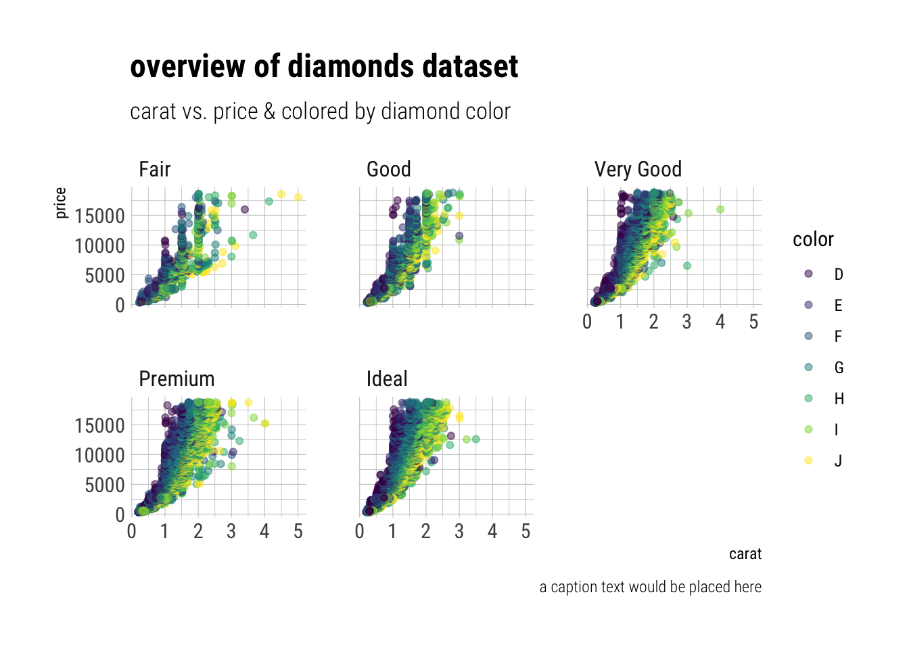
3. theme_ft_rc()
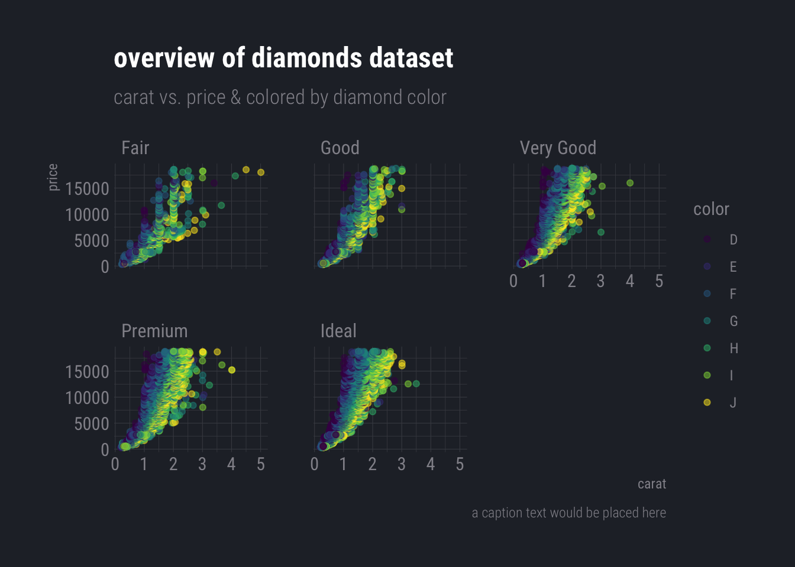
13.3.2 get inspired - what plots can be generated
13.4 broom - elegant graphics for data analysis (part of tidyverse)

broom package: broom summarizes key information about models in tidy tibble()s. broom provides three verbs to make it convenient to interact with model objects.
tidy()summarizes information about fit componentsglance()report goodness of fit measuresaugment()adds informations about observations to a dataset
broom can handle 100+ models from popular modelling packages.
The following methods are currently available in broom: (code from https://github.com/tidymodels/broom/blob/master/vignettes/available-methods.Rmd)
| class | tidy | glance | augment |
|---|---|---|---|
| aareg | x | x | |
| acf | x | ||
| anova | x | ||
| aov | x | ||
| aovlist | x | ||
| Arima | x | x | |
| betareg | x | x | x |
| biglm | x | x | |
| binDesign | x | x | |
| binWidth | x | ||
| boot | x | ||
| brmsfit | x | ||
| btergm | x | ||
| cch | x | x | |
| character | x | ||
| cld | x | ||
| clm | x | x | x |
| clmm | x | x | |
| coeftest | x | ||
| confint.glht | x | ||
| confusionMatrix | x | ||
| coxph | x | x | x |
| cv.glmnet | x | x | |
| data.frame | x | x | |
| default | x | x | x |
| density | x | ||
| dgCMatrix | x | ||
| dgTMatrix | x | ||
| dist | x | ||
| durbinWatsonTest | x | x | |
| emmGrid | x | ||
| ergm | x | x | |
| factanal | x | x | x |
| felm | x | x | x |
| fitdistr | x | x | |
| ftable | x | ||
| gam | x | x | |
| Gam | x | x | |
| gamlss | x | ||
| garch | x | x | |
| geeglm | x | ||
| glht | x | ||
| glm | x | x | x |
| glmnet | x | x | |
| gmm | x | x | |
| htest | x | x | x |
| ivreg | x | x | x |
| kappa | x | ||
| kde | x | ||
| Kendall | x | ||
| kmeans | x | x | x |
| lavaan | x | x | |
| Line | x | ||
| Lines | x | ||
| list | x | x | |
| lm | x | x | x |
| lme | x | x | x |
| lmodel2 | x | x | |
| logical | x | ||
| lsmobj | x | ||
| manova | x | ||
| map | x | ||
| matrix | x | x | |
| Mclust | x | x | x |
| merMod | x | x | x |
| mle2 | x | ||
| muhaz | x | x | |
| multinom | x | x | |
| nlrq | x | x | x |
| nls | x | x | x |
| NULL | x | x | x |
| numeric | x | ||
| orcutt | x | x | |
| pairwise.htest | x | ||
| plm | x | x | x |
| poLCA | x | x | x |
| polr | x | x | x |
| Polygon | x | ||
| Polygons | x | ||
| power.htest | x | ||
| prcomp | x | x | |
| pyears | x | x | |
| rcorr | x | ||
| ref.grid | x | ||
| ridgelm | x | x | |
| rjags | x | ||
| rlm | x | x | x |
| roc | x | ||
| rowwise_df | x | x | x |
| rq | x | x | x |
| rqs | x | x | x |
| sparseMatrix | x | ||
| SpatialLinesDataFrame | x | ||
| SpatialPolygons | x | ||
| SpatialPolygonsDataFrame | x | ||
| spec | x | ||
| speedlm | x | x | x |
| stanfit | x | ||
| stanreg | x | x | |
| summary.glht | x | ||
| summary.lm | x | x | |
| summaryDefault | x | x | |
| survdiff | x | x | |
| survexp | x | x | |
| survfit | x | x | |
| survreg | x | x | x |
| svyolr | x | x | |
| table | x | ||
| tbl_df | x | x | x |
| ts | x | ||
| TukeyHSD | x | ||
| zoo | x |
13.4.1 broom usage
(codes from tidyverse.org + talk Alex Hayes Rconf2019)
13.4.1.1 tidy() - summarizes information about fit components
## ── Attaching packages ─────────────────────────────────────────────────────────────────────────────────────── tidyverse 1.3.0 ──## ✓ tibble 2.1.3 ✓ purrr 0.3.3
## ✓ tidyr 1.0.2 ✓ forcats 0.5.0
## ✓ readr 1.3.1## ── Conflicts ────────────────────────────────────────────────────────────────────────────────────────── tidyverse_conflicts() ──
## x dplyr::filter() masks stats::filter()
## x dplyr::lag() masks stats::lag()you can also use that in RMarkdown and create a nice table right away with knitr package
| term | estimate | std.error | statistic | p.value |
|---|---|---|---|---|
| (Intercept) | 3.59 | 0.09 | 38.27 | 0.00 |
| Petal.Length | -0.26 | 0.07 | -3.84 | 0.00 |
| Petal.Width | 0.36 | 0.15 | 2.35 | 0.02 |
13.4.1.2 glance() - report goodness of fit measures
if you would like to compare models:
fits <- list(
fit1 = lm(hp ~ cyl, mtcars),
fit2 = lm(hp ~ cyl + mpg, mtcars),
fit3 = lm(hp ~ ., mtcars)
)
gof <- map_df(fits, glance, .id = "model") %>%
arrange(AIC)
gof